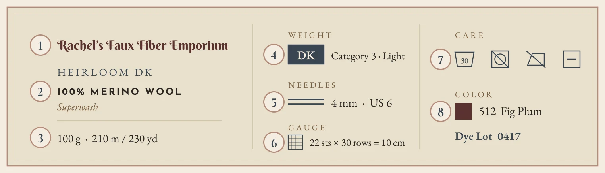
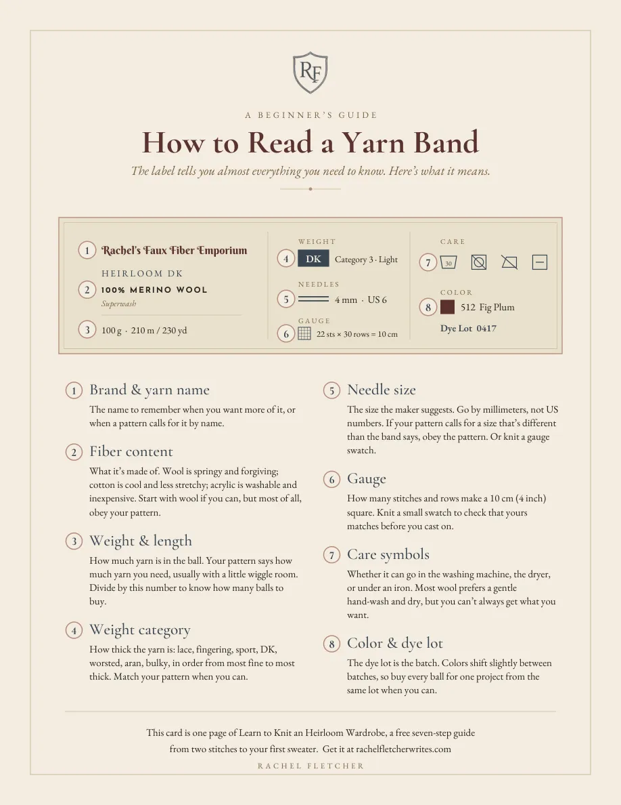
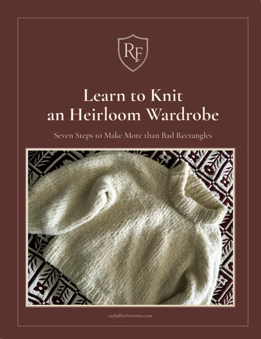

The label tells you almost everything you need to know. Here’s what it means.

The name to remember when you want more of it, or when a pattern calls for it by name.
What it’s made of. Wool is springy and forgiving; cotton is cool and less stretchy; acrylic is washable and inexpensive. Start with wool if you can, but most of all, obey your pattern.
How much yarn is in the ball. Your pattern says how much yarn you need, usually with a little wiggle room. Divide by this number to know how many balls to buy.
How thick the yarn is: lace, fingering, sport, DK, worsted, aran, bulky, in order from most fine to most thick. Match your pattern when you can.
The size the maker suggests. Go by millimeters, not US numbers. If your pattern calls for a size that’s different than the band says, obey the pattern. Or knit a gauge swatch.
How many stitches and rows make a 10 cm (4 inch) square. Knit a small swatch to check that yours matches before you cast on.
Whether it can go in the washing machine, the dryer, or under an iron. Most wool prefers a gentle hand-wash and dry, but you can’t always get what you want.
The dye lot is the batch. Colors shift slightly between batches, so buy every ball for one project from the same lot when you can.

Free, no email needed — print it and tuck it in your project bag.
Download the card →
This card is one page of my free beginner’s guide — seven steps from two stitches to your first sweater. The needles worth buying, how to understand yarn, a ribbed hat to start, and the sweater that proves you can.
Twenty-six pages, free. Tell me where to send it.
You’ll also get Fletchling Thoughts, every other week. Unsubscribe anytime.